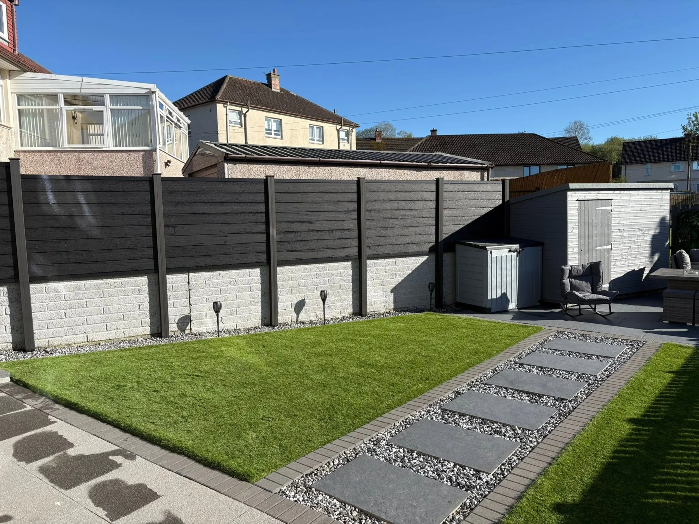

DeckingComposite and wooden decking

FencingGarden boundaries and screening
Artificial GrassGreen space for your garden
PavingPaths, patios and practical access
Decorative StonesBorders, edges and garden details
MAKE MORE OF YOUR GARDEN
Less unused.
More enjoyed.
A deck to sit out on, a clear path across the garden, or a boundary that makes the space feel your own. DC Decking and Fencing offers composite and wooden decking, fencing, artificial grass, paving and decorative stones.
Browse the project photos and get in touch to discuss your layout, preferred finish and access.
Talk through your ideas →

FENCING & SCREENING
A better boundary.
From timber fencing to contemporary grey screening, the right boundary brings privacy and gives the garden a clear edge. Explore the different finishes in the portfolio.
Explore fencing →

RECENT WORK
See what’s possible.
Decks, boundaries and garden spaces by DC Decking and Fencing. Tap a photo to view the complete image.
A CLOSER LOOK
Connected to home.
This deck follows the rear of the house, with glass balustrades keeping the view into the garden open. Two views show the shape, edge details and access.
Explore decking →DC DECKING AND FENCING
Bring it together.
DC works across decking, fencing and garden improvements, with composite and timber options, artificial grass, paving and decorative stones.
01
Space to relax
Decks and paved areas that give you somewhere to enjoy the garden.
02
Details that connect
Steps, balustrades, edges and boundaries shape how a garden works.
03
Start with your ideas
Share a few photos, the location and approximate measurements.
REQUEST A QUOTE
What’s the plan?
Choose the service, tell us about your garden and share your postcode. The form opens WhatsApp with your message ready to send. You can attach photos there.
Your details are shared only when you send the message. Privacy information.
GOOD TO KNOW
A few answers.
What decking do you offer?
DC offers composite and wooden decking. The project photos include grey decks, raised platforms, steps and glass or black-framed balustrades.
Can you help with fencing?
Yes. The portfolio includes timber fencing, contemporary screening and side access. Send the approximate length, preferred style and photos of the current boundary.
Do you offer artificial grass and paving?
Both are listed services, alongside decorative stones. Discuss the intended use, existing ground and the finish you would like.
What should I include in my enquiry?
Include your postcode, the service, approximate dimensions and a short description. Add photos when you send the WhatsApp message.
Which areas do you cover?
Send your postcode to confirm coverage and availability for your project.
Can I ask about hot tub enclosures?
Hot tub enclosure work is listed on the business profile. Describe the space, access and what you need when making your enquiry.
DC DECKING AND FENCING
Step into something better.
Decking · Fencing · Garden improvements